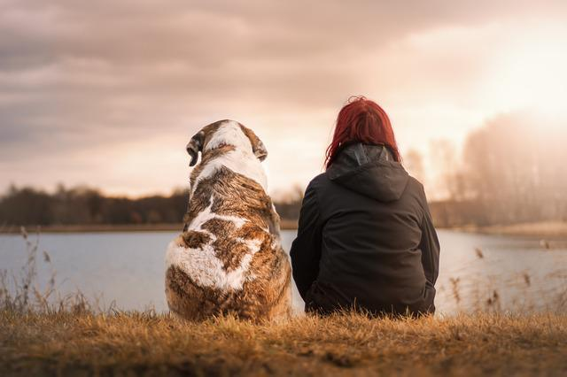
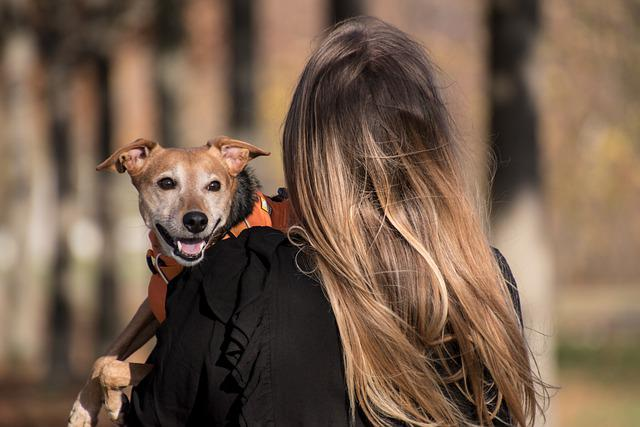

Better Dog's
Néfi Leite
Touching Stories
Everything we've lived together in recent years is based on love, dedication, respect, and trust. People always say “Your connection is amazing” YES and this is only possible because, in addition to shurastey being my companion dog, he is my life partner, he is always with me in everything I do but especially in the places where I somehow he'll feel good. My well-being in taking you with me to all the roles has to be equivalent to your well-being of being in this place.
Today we visited @summitov and it was an amazing experience, and shurastey was the first dog to go there, but the most amazing thing is realizing that you were fine walking on a glass walkway at a height of over 400 meters and all that because you were feeling safe because you were with me by your side!